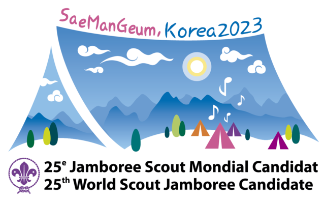

Los scouts contamos con una organización no gubernamental internacional que se dedica a gestionar, establecer normas, organizar eventos internacionales, entre las 172 organizaciones nacionales que actualmente están registradas. La OMMS (Organización Mundial del Movimiento scout) fue creada en 1920 y tiene su sede central en Ginebra, Suiza. Gracias a ella, contamos con una base principal sobre como trabajar los valores scout establecidos por nuestro fundador.

La OMMS cuenta con 6 regiones; África, Árabe, Asia-Pacífico, Eurasia, Europa y América. Cada una de ellas cuenta con un comité regional que se encarga de gestionar y organizar los eventos y actividades que se realizan en cada una de ellas. En el caso de Scouts de Argentina (SAAC), pertenecemos a la región Interamericana, junto con otros 32 países.

Una de las muchas tareas de la OMMS es organizar los Jamboree que son grandes campamentos scout mundiales que se realizan cada 4 años y reúnen a miles de scouts en distintas partes del mundo, para compartir experiencias y aprender de otras culturas. El último Jamboree Mundial se realizó en el año 2023 en Jeolla del Norte, Corea del Sur bajo el título "Dibuja Tu Sueño", y contó con la participación de más de 40.000 scouts de todo el mundo. El próximo Jamboree Mundial se realizará en el año 2027 en Gdansk, Polonia.

~ lauti
17/03/2024